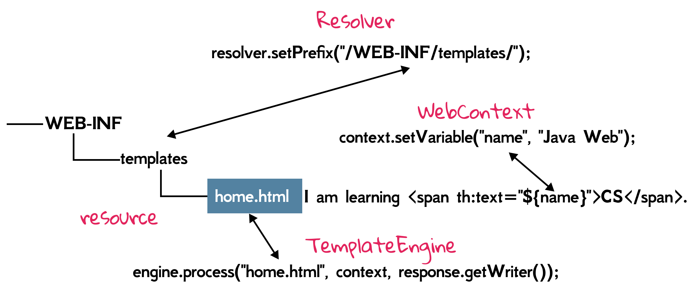

7.1 Get Started With Thymeleaf
[!NOTE] This section is mainly adapted from Tutorial: Using Thymeleaf. It is highly recommended referring to this tutorial if you have any doubt about how to use Thymeleaf.
Setting up
Intellij IDEA offers built-in support for Thymeleaf, and you can also set it up manually. When creating a new project, please make sure Thymeleaf dependency is selected. Then you can delete all JSPs generated in your project.

implementation('org.thymeleaf:thymeleaf:3.0.12.RELEASE')
To use Thymeleaf, we need a TemplateEngine instance to resolve (i.e., obtain and read) templates. Of course, we also have to specify some important information, including the location and mode of templates, and this is what ITemplateResolver does. For Java EE projects, we use its implementation ServletContextTemplateResolver, and the paths of these resources start at the web application root, and are normally stored inside /WEB-INF.
ServletContextTemplateResolver resolver = new ServletContextTemplateResolver(context);
resolver.setPrefix("/WEB-INF/templates/");
resolver.setTemplateMode(TemplateMode.HTML);
TemplateEngine engine = new TemplateEngine();
engine.setTemplateResolver(resolver);
The whole project should share one TemplateEngine instance, so we put the code above into an implementation of ServletContextListener, and then store engine into an attribute in context scope. The complete code can be found at ch7/thymeleaf. Note that we add an extra helper TemplateEngineUtil.java class for the ease of getting this engine, and you can adopt the similar designs for all attributes getters/setters.
[!NOTE] Readers can start from the
ch7/simple-thymeleafproject to understand how Thymeleaf works.
Let's see how to pass data into the templates in HelloServlet.java. It is slightly different from the code we saw before:
TemplateEngine engine = TemplateEngineUtil.getTemplateEngine(request.getServletContext());
WebContext context = new WebContext(request, response, request.getServletContext());
context.setVariable("name", "Java Web");
engine.process("home.html", context, response.getWriter());
First, we get the TemplateEngine instance from attribute via a helper class. To resolve a template, we use its process() method:
void process(String, org.thymeleaf.context.IContext, Writer) Process the specified template (usually the template name). Output will be written to the specified writer as it is generated from processing the template.
Its first parameter is the template resource (under WEB-INF/templates). The context will contain the variables that will be available for the execution of expressions inside the template[1]. Because this is Java web project, WebContent is used. The third parameter is also output destination (usually use HttpServletResponse.getWriter()).

home.html is a plain HTML page with some special attributes defined by Thymeleaf. Note that the web browser will ignore the attributes which it cannot recognize, so we can preview how it looks even if we don't start this web application.
<body>
I am learning <span th:text="${name}">CS</span>.
</body>
th:text is an attribute defined by Thymeleaf, and it is used to display text passed from the template engine. It will display the value of a variable named name; it simply display CS if the template engine don't work or there is no such variable. You can roughly think of variables here as attributes which we have learned in Section 4.2. The following figure illustrates the mapping of several names showed above.

${name}, called variable expressions, simply means “get the variable called name”, which is one of the Standard Expressions offered by Thymeleaf. Similar to attributes, we can put a Java bean into the variable, and use expression ${user.name}, which means “get the variable called user, and call its getName() method”.
context.setVariable("user", new User("Zhongpu", 30));
Standard expression can be of five types:
${...}: Variable expressions.*{...}: Selection expressions.#{...}: Message (i18n) expressions.@{...}: Link (URL) expressions.~{...}: Fragment expressions.
Messages
We have studied how to use variables in Thymeleaf, and now we will learn another standard expression, message expression, which is used for internationalization (i18n). A web page shall usually be adapted to different languages for people from different countries. For example, Hello in English, should be adapted to 你好 in Chinese, or こんにちは in Japanese.
The i18n text in different languages is called externalized text, since it is out of template files, and can be kept in separate files (typically .properties files).
Messages always have a key that identifies them, and Thymeleaf allows you to specify that a text should correspond to a specific message with the #{...} syntax:
<h1 th:text="#{hello}">你好</h1>
So, where is this externalized text? The standard message resolver expects to find messages for template files (.html) in properties files (.properties) in the same folder and with the same name as the template[2]. For example, the template HTML is WEB-INF/templates/home.html, the properties files can be:
/WEB-INF/templates/home_en.propertiesfor English texts./WEB-INF/templates/home_ja.propertiesfor Japanese texts./WEB-INF/templates/home_zh.propertiesfor Chinese tests./WEB-INF/templates/home.propertiesfor default texts (if the locale is not matched).
In IntelliJ IDEA, let's create a Resource Bundle under WEB-INF/templates[3], whose base name is home.

Then we can add the needed locale, where en is for English, ja is for Japanese, and zh is for Chinese. Readers can refer to Locale Codes for more information[4].
Let’s have a look at our home_ja.properties file:
hello=こんにちは
This is all we need for making Thymeleaf process our i18n template, and which language is shown will depend on the web browser's setting.By the way, recall Section 3.3. It is necessary to set UTF-8 for responses multi languages, and let the web-oriented WebContext know your locale by requests' header Accept-Language:
WebContext context = new WebContext(request, response, request.getServletContext(), request.getLocale());
response.setCharacterEncoding("UTF-8");
Variables revisited
${} expressions are in fact OGNL (Object-Graph Navigation Language) expressions executed on the map of variables contained in the context[5].
When using Thymeleaf in a web environment, we can use a series of shortcuts for accessing request parameters, session attributes and application attributes. For example,
request.getSession().setAttribute("foo", 42);
We can access this value in a template:
${session.foo}
${session.size()}
${session.isEmpty()}
${session.containsKey('foo')}
Note there is no need to specify a namespace for accessing request attributes (as opposed to request parameters) because all request attributes are automatically added to the context as variables in the context root. For example,
request.setAttribute("bar", 88);
And then we can retrieve it by ${bar} directly.
We can also add parameters to the message. Just like this:
welcome=Welcome {0}!
Parameters are specified according to the java.text.MessageFormat standard syntax, which means you can format to numbers and dates as specified in the API docs for classes in the java.text.* package.
In order to specify a value for our parameter, and given an HTTP session attribute called user, we could have:
<h2 th:text="#{welcome(${session.user})}">欢迎用户！</h2>
[1] This context implementation contains all the required Servlet-API artifacts needed for template execution in web environments, and should be enough for most web-based scenarios of template processing.
[2] The default message resolve is StandardMessageResolver.
[3] Please set the default encoding for properties files to UTF-8 in IntelliJ IDEA.
[4] One language may have several branches. For example, zh-cn is for Chinese used in mainland China, and zh-hk is for Chinese used in Hong Kong SAR, China.
[5] You do not need to know every detail about OGNL syntax and features.
[6] See Java Doc API for class org.thymeleaf.context.WebServletContextVariablesMap